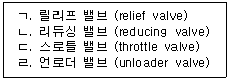
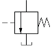
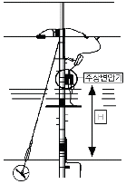

굴삭기운전기능사 (2009-09-27 기출문제)
1. 운전 중 엔진오일 경고등이 점등되었을 때의 원인으로 볼 수 없는 것은?
- 드레인 플러그가 열렸을 때
- 윤활계통이 막혔을 때
- 오일필터가 막혔을 때
- 연료필터가 막혔을 때
(정답률: 47%)

2. 실린더헤드 등 면적이 넓은 부분에서 볼트를 조이는 방법으로 가장 적합한 것은?
- 규정 토크를 한 번에 조인다.
- 중심에서 외측을 향하여 대각선으로 조인다.
- 외측에서 중심을 향하여 대각선으로 조인다.
- 조이기 쉬운 곳부터 조인다.
(정답률: 78%)
3. 냉각장치에서 수온조절기의 열림 온도가 낮을 경우 나타나는 현상 설명으로 맞는 것은?
- 엔진의 회전속도가 빨라진다.
- 엔진이 과열되기 쉽다.
- 워밍업 시간이 길어지기 쉽다.
- 물 펌프에 부하가 걸리기 쉽다.
(정답률: 60%)
4. 노즐을 노즐테스터기로 시험할 때 검사하지 않는 것은?
- 분포상태
- 분사시간
- 후적유무
- 분사개시 압력
(정답률: 54%)
5. 디젤기관에 과급기를 부착하는 주된 목적은?
- 출력의 증대
- 냉각효율의 증대
- 배기의 정화
- 윤활성의 증대
(정답률: 86%)
6. 기관의 연료분사펌프에서 연료를 보내거나 공기를 빼내는 장치는?
- 체크밸브(check valve)
- 프라이밍 펌프(priming pump)
- 오버플로 파이프(over flow pipe)
- 드레인 콕(drain cock)
(정답률: 65%)
7. 팬벨트에 대한 점검과정이다. 가장 적합하지 않은 것은?
- 팬벨트는 눌러(약 10kgf) 처짐이 13~20mm 정도로 한다.
- 팬벨트는 풀리의 밑 부분에 접촉되어야 한다.
- 팬벨트 조정은 발전기를 움직이면서 조정한다.
- 팬벨트가 너무 헐거우면 기관 과열의 원인이 된다.
(정답률: 45%)
8. 기관을 시동하기 전에 점검할 사항과 가장 관계가 먼 것은?
- 연료의 양
- 냉각수의 양
- 엔진오일의 온도
- 엔진오일의 양
(정답률: 88%)
9. 유압식 밸브 리프터의 장점이 아닌 것은?
- 밸브간극 조정이 필요하지 않다.
- 밸브 개폐시기가 정확하다.
- 밸브구조가 간단하다.
- 밸브기구의 내구성이 좋다.
(정답률: 58%)
10. 디젤기관의 순환운동 순서로 맞는 것은?
- 공기압축→가스폭발→공기흡입→배기→점화
- 연료흡입→연료분사→공기압축→착화연소→연소, 배기
- 공기흡입→공기압축→연소?배기→연료분사→착화연소
- 공기흡입→공기압축→연료분사→착화연소→배기
(정답률: 72%)
11. 엔진의 윤활유 압력이 낮은 원인이 아닌 것은?
- 윤활유 펌프의 성능이 좋지 않다.
- 윤활유의 양이 부족하다.
- 윤활유의 점도가 너무 높다.
- 기관 각부의 마모가 심하다.
(정답률: 79%)
12. 일반적으로 기관의 크랭크축이 회전하지 않아도 작동되는 것은?
- 발전기
- 캠 샤프트
- 워터펌프
- 와이퍼 모터
(정답률: 61%)
13. 12V용 납산 축전지의 방전종지 전압은?
- 12V
- 10.5V
- 7.5V
- 1.75V
(정답률: 51%)
14. 다음 중 전조등 회로의 구성으로 맞는 것은?
- 전조등 회로는 직렬로 연결되어 있다.
- 전조등 회로는 병렬로 연결되어 있다.
- 전조등 회로는 직렬과 단식 배선으로 연결되어 있다.
- 전조등 회로는 단식 배선이다.
(정답률: 80%)
15. 다음 중 AC와 DC 발전기의 조정기에서 공통으로 가지고 있는 것은?
- 전압 조정기
- 전류 조정기
- 컷 아웃 릴레이
- 전력 조정기
(정답률: 53%)
16. 전자제어 디젤 분사장치에서 연료를 제어하기 위해 센서로부터 각종 정보(가속페달의 위치, 기관속도, 분사시기, 흡기, 냉각수, 연료온도 등)를 입력받아 전기적 출력신호로 변환하는 것은?
- 컨트롤 로드 액추에이터
- 제어유닛(ECU)
- 컨트롤 슬리브 액추에이터
- 자기진단(self diagnosis)
(정답률: 60%)
17. 직권식 기동전동기의 전기자 코일과 계자 코일의 연결이 맞는 것은?
- 병렬로 연결되어 있다.
- 직렬로 연결되어 있다.
- 직렬?병렬로 연결되어 있다.
- 계자 코일은 직렬, 전기자 코일은 병렬로 연결되어 있다.
(정답률: 39%)
18. 납산 축전지를 방전하면 양극판과 음극판의 재질은 어떻게 변하는가?
- 황산납이 된다.
- 해면상납이 된다.
- 일산화납이 된다.
- 과산화납이 된다.
(정답률: 72%)
19. 굴삭기의 일상점검 사항이 아닌 것은?
- 엔진 오일량
- 냉각수 누출여부
- 오일쿨러 세척
- 유압 오일량
(정답률: 85%)
20. 타이어식 건설기계의 액슬 허브에 오일을 교환하고자 한다. 오일을 배출시킬 때와 주입할 때의 플러그 위치로 옳은 것은?
- 배출시킬 때 1시 방향, 주입할 때 : 9시 방향
- 배출시킬 때 6시 방향, 주입할 때 : 9시 방향
- 배출시킬 때 3시 방향, 주입할 때 : 9시 방향
- 배출시킬 때 2시 방향, 주입할 때 : 12시 방향
(정답률: 68%)
21. 동력전달장치에서 클러치의 고장과 관계없는 것은?
- 클러치 압력판 스프링 손상
- 클러치 면의 마멸
- 플라이휠 링기어의 마멸
- 릴리스 레버의 조정불량
(정답률: 41%)
22. 무한궤도식 도저의 하부 추진체와 트랙의 점검항목 및 조치사항을 열거한 것 중 틀린 것은?
- 구동 스프로킷의 마멸한계를 초과하면 교환한다.
- 트랙 장력을 규정 값으로 조정한다.
- 리코일 스프링의 손상 등 상?하부 롤러 균열 및 마멸 등이 있으면 교환한다.
- 각부 롤러의 이상상태 및 리이닝 장치의 기능을 점검한다.
(정답률: 37%)
23. 변속기의 필요성과 관계가 먼 것은?
- 기관의 회전력을 증대시킨다.
- 시동시 장비를 무부하 상태로 한다.
- 장비의 후진시 필요하다.
- 환향을 빠르게 한다.
(정답률: 55%)
24. 로더로 지면 고르기 작업 시 한 번의 고르기를 마친 후 장비를 몇 도 회전시켜서 반복하는 것이 가장 좋은가?
- 25°
- 45°
- 90°
- 180°
(정답률: 51%)
25. 기중기의 작업에 대한 설명 중 맞는 것은?
- 파워 셔블은 지면보다 낮은 곳의 굴착에 사용되며, 지면보다 높은 곳의 굴착은 사용이 곤란하다.
- 드래그라인은 굴착력이 강하므로 주로 견고한 지반의 굴착에 사용된다.
- 기중기의 감아 올리는 속도는 드래그라인의 경우보다 빠르다.
- 클램셀은 좁은 면적에서 깊은 굴착을 하는 경우나 높은 위치에서의 적재에 적합하다.
(정답률: 43%)
26. 지게차의 동력전달순서로 맞는 것은?
- 엔진→변속기→토크컨버터→종감속 기어 및 차동장치→최종 감속기→앞구동축→차륜
- 엔진→변속기→토크컨버터→종감속 기어 및 차동장치→앞구동축→최종 감속기→차륜
- 엔진→토크컨버터→변속기→앞구동축→종감속 기어 및 차동장치→최종 감속기→차륜
- 엔진→토크컨버터→변속기→종감속 기어 및 차동장치→앞구동축→최종 감속기→차륜
(정답률: 44%)
27. 건설기계 조종사 면허의 취소?정지처분 기준 중 면허취소에 해당되지 않는 것은?
- 고의로 인명 피해를 입힌 때
- 과실로 7명 이상에게 중상을 입힌 때
- 과실로 19명에게 경상을 입힌 때
- 일천만원 이상 재산 피해를 입힌 때
(정답률: 74%)
28. 정기검사를 받지 아니하고, 정기검사 신청기간만료일로부터 30일 이내인 때의 과태료는?
- 20만원
- 10만원
- 5만원
- 2만원
(정답률: 37%)
29. 건설기계 구조변경에 대한 설명으로 맞는 것은?
- 건설기계의 주요구조를 변경 또는 개조한 때 실시하는 검사이다.
- 건설기계의 구조변경 전 시?도지사의 구조변경 허가를 받는 것이다.
- 건설기계 구조변경 후 신규 등록을 하여야 한다.
- 건설기계의 구조변경을 하기 전 변경등록을 하여야 한다.
(정답률: 42%)
30. 다음 그림의 교통안전표지에 대한 설명으로 맞는 것은?
- 30톤 자동차 전용도로
- 최고중량 제한표시
- 최고시속 30킬로미터 속도 제한표지
- 최저시속 30킬로미터 속도 제한표지
(정답률: 74%)
31. 도로를 통행하는 자동차가 야간에 켜야하는 등화의 구분 중 견인되는 자동차가 켜야 할 등화는?
- 전조등, 차폭등, 미등
- 차폭등, 미등, 번호등
- 전조등, 미등, 번호등
- 전조등, 미등
(정답률: 60%)
32. 부분 건설기계정비업의 사업범위로 적당한 것은?
- 프레임 조정, 롤러, 링크, 트랙슈의 재생을 제외한 차체
- 원동기부의 완전분해 정비
- 차체부의 완전분해 정비
- 실린더헤드의 탈착정비
(정답률: 61%)
33. 건설기계등록번호표의 색칠 기준으로 틀린 것은?
- 자가용-녹색 판에 흰색 문자
- 영업용-주황색 판에 흰색 문자
- 관용-흰색 판에 검은색 문자
- 수입용-적색 판에 흰색 문자
(정답률: 71%)
34. 도로교통법상 주차금지 장소가 아닌 것은?
- 화재경보기로부터 5m 지점
- 터널 안
- 다리 위
- 소방용 방화물통으로부터 5m 지점
(정답률: 64%)
35. 도로교통법 상 도로에 해당되지 않는 것은?
- 해상 도로법에 의한 항로
- 차마의 통행을 위한 도로
- 유료도로법에 의한 유료도로
- 도로법에 의한 도로
(정답률: 78%)
36. 교차로 또는 그 부근에서 긴급자동차가 접근하였을 때 피양 방법으로서 옳은 것은?
- 교차로의 우측단에 일시 정지하여 진로를 피양한다.
- 교차로를 피하여 도로의 우측 가장자리에 일시 정지한다.
- 서행하면서 앞지르기를 하라는 신호를 한다.
- 그대로 진행방향으로 진행을 계속한다.
(정답률: 66%)
37. 유압계통의 오일장치 내에 슬러지 등이 생겼을 때 이것을 용해하여 장치 내를 깨끗이 하는 작업은?
- 플러싱
- 트램핑
- 서징
- 코킹
(정답률: 71%)
38. 건설기계에 사용하고 있는 필터의 종류가 아닌 것은?
- 배출 필터
- 흡입 필터
- 고압 필터
- 저압 필터
(정답률: 50%)
39. 유압 작동유가 갖추어야 할 성질이 아닌 것은?
- 온도에 의한 점도변화가 적을 것
- 산화 안정성이 좋을 것
- 방청 및 방식성이 좋을 것
- 소포성 및 기포분리성이 적을 것
(정답률: 58%)
40. 유압 작동기(hydraulic actuator)의 설명으로 맞는 것은?
- 유체 에너지를 생성하는 기기
- 유체 에너지를 축적하는 기기
- 유체 에너지를 기계적인 일로 변환시키는 기기
- 기계적인 에너지를 유체 에너지로 변환시키는 기기
(정답률: 71%)
41. 다음 보기에서 회로 내의 압력을 설정치 이하로 유지하는 밸브로만 짝지어진 것은?

- ㄱ, ㄴ, ㄹ
- ㄴ, ㄷ
- ㄷ, ㄹ
- ㄱ, ㄴ, ㄷ
(정답률: 56%)
42. 다음 유압기호가 나타내는 것은?

- 릴리프 밸브 (relief valve)
- 감압 밸브 (reducing valve)
- 순차밸브(sequence valve)
- 무부하 밸브 (unloader valve)
(정답률: 48%)
43. 작동유 온도가 과열되었을 때 유압계통에 미치는 영향으로 틀린 것은?
- 열화를 촉진한다.
- 점도의 저하에 의해 누유되기 쉽다.
- 유압펌프 등의 효율은 좋아진다.
- 온도변화에 의해 유압기기가 열 변형되기 쉽다.
(정답률: 81%)
44. 유압장치에서 작동유압 에너지에 의해 연속적으로 회전운동 함으로서 기계적인 일을 하는 것은?
- 유압모터
- 유압실린더
- 유압제어밸브
- 유압탱크
(정답률: 81%)
45. 플런저식 유압펌프의 특징이 아닌 것은?
- 기어펌프에 비해 최고압력이 높다.
- 피스톤이 회전운동을 한다.
- 축은 회전 또는 왕복운동을 한다.
- 가변용량이 가능하다.
(정답률: 40%)
46. 유압회로에서 속도제어 회로가 아닌 것은?
- 블리드 오프
- 미터 아웃
- 미터인
- 시퀀스
(정답률: 66%)
47. 사용한 공구를 정비 보관할 때 가장 옳은 것은?
- 사용 시 기름이 묻은 공구는 물로 깨끗이 씻어서 보관한다.
- 사용한 공구는 면 걸레로 깨끗이 닦아서 공구상자 또는 공구보관으로 지정된 곳에 보관한다.
- 사용한 공구는 종류별로 묶어서 보관한다.
- 사용한 공구는 녹슬지 않게 기름칠을 잘해서 작업대 위에 진열해 놓는다.
(정답률: 75%)
48. 안전관리 측면에서 수공구로 인한 재해의 원인이 아닌 것은?
- 공구의 수량 파악
- 잘못된 공구 선택
- 공구의 점검 소홀
- 사용법의 미 숙지
(정답률: 86%)
49. 전기 작업에서 안전작업상 적합하지 않은 것은?
- 저압전력선에는 감전우려가 없으므로 안심하고 작업할 것
- 퓨즈는 규정된 알맞은 것을 끼울 것
- 전선이나 코드의 접속부는 절연물로서 완전히 피복하여 둘 것
- 전기장치는 사용 후 스위치를 OFF할 것
(정답률: 89%)
50. 토크렌치 사용방법으로 올바른 것은?
- 핸들을 잡고 밀면서 사용한다.
- 토크 증대를 위해 손잡이에 파이프를 끼워서 사용하는 것이 좋다.
- 게이지에 관계없이 볼트 및 너트를 조이면 된다.
- 볼트나 너트 조임력을 규정 값에 정확히 맞도록 하기 위해 사용한다.
(정답률: 82%)
51. 전기용접의 아크 빛으로 인해 눈이 혈안이 되고 눈이 붓는 수가 있다. 이럴 때 응급조치 사항으로 가장 적절한 것은?
- 눈을 잠시 감고 안정을 취한다.
- 안약을 넣고 계속 작업을 한다.
- 소금물로 눈을 세정한 후 작업한다.
- 냉 습포를 눈 위에 올려놓고 안정을 취한다.
(정답률: 82%)
52. 다음 배출가스 중에서 인체에 가장 해가 없는 가스는?
- CO
- CO2
- HC
- NOx
(정답률: 69%)
53. 안전표지의 색채 중에서 대피장소 또는 비상구의 표지에 사용되는 것으로 맞는 것은?
- 빨간색
- 주황색
- 녹색
- 청색
(정답률: 83%)
54. 목재, 종이, 석탄 등 일반 가연물의 화재는 어떤 화재로 분류하는가?
- A급 화재
- B급 화재
- C급 화재
- D급 화재
(정답률: 83%)
55. 안전 보호구를 선택 시 유의사항으로 틀린 것은?
- 보호구 검정에 합격하고 보호성능이 보장될 것
- 반드시 강철로 제작되어 안전 보장형일 것
- 작업 행동에 방해되지 않을 것
- 착용이 용이하고 크기 등 사용자에게 편리할 것
(정답률: 89%)
56. 크레인으로 인양 시 물체의 중심을 측정하여 인양하여야 한다. 다음 중 잘못된 것은?
- 형상이 복잡한 물체의 무게 중심을 확인한다.
- 인양 물체를 서서히 올려 지상 약 30cm지점에서 정지하여 확인한다.
- 인양 물체의 중심이 높으면 물체가 기울 수 있다.
- 와이어로프나 매달기용 체인이 벗겨질 우려가 있으면 되도록 높이 인양한다.
(정답률: 86%)
57. 도시가스사업법에서 저압이라 함은 압축가스일 경우 몇 MPa 미만의 압력을 말하는가?
- 2
- 0.5
- 0.1
- 10
(정답률: 57%)
58. 도시가스배관이 매설된 지점에서 가스배관 주위를 굴착하고자 할 때에 반드시 인력으로 굴착해야 하는 범위는?
- 가스 배관 좌우 1m 이내
- 가스 배관 좌우 2m 이내
- 가스 배관 좌우 3m 이내
- 가스 배관 좌우 4m 이내
(정답률: 61%)
59. 6600V 고압전선로 주변에서 굴착 시 안전작업 조치사항으로 가장 알맞은 것은?
- 고압전선에 붐이 근접하지 않도록 한다.
- 버켓과 붐의 길이는 무시해도 된다.
- 전선에 버켓이 근접하는 것은 괜찮다.
- 고압전선에 장비가 직접 접촉하지 않으면 작업을 할 수 있다.
(정답률: 84%)
60. 그림과 같이 고압가공전선로 주상변압기를 설치하는데 높이 H는 시가지와 시가지 외에서 각각 몇 m인가?

- 시가지 : 4.5, 시가지 외 : 4
- 시가지 : 4.5, 시가지 외 : 3
- 시가지 : 5, 시가지 외 : 4
- 시가지 : 5, 시가지 외 : 3
(정답률: 44%)